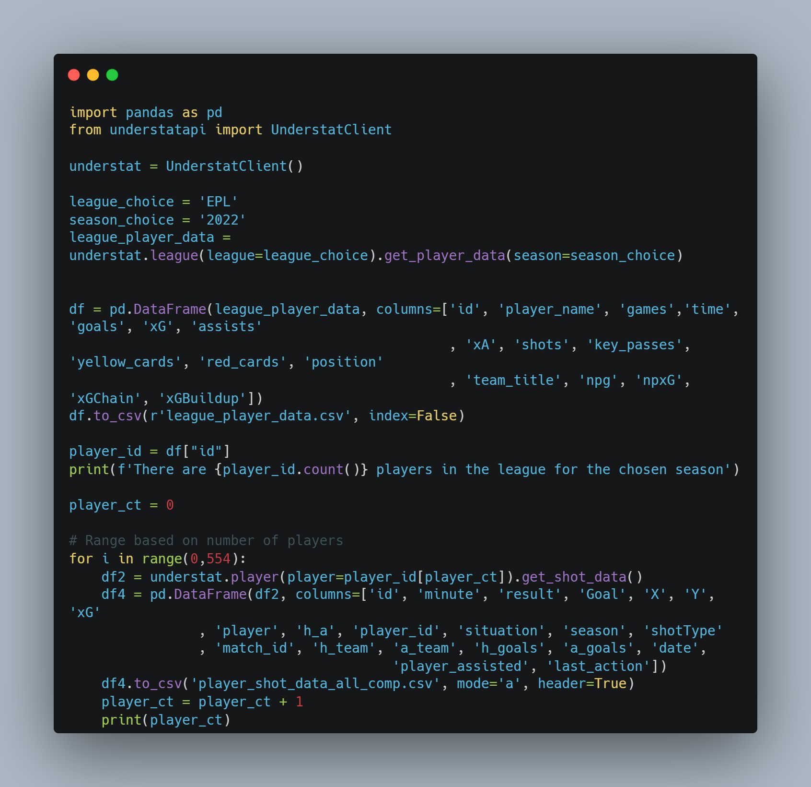
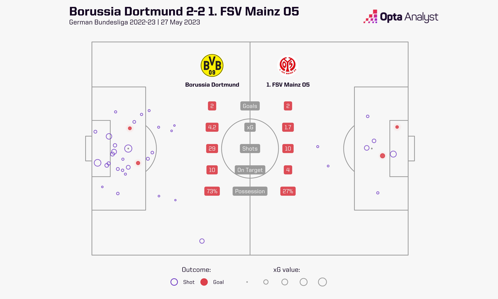
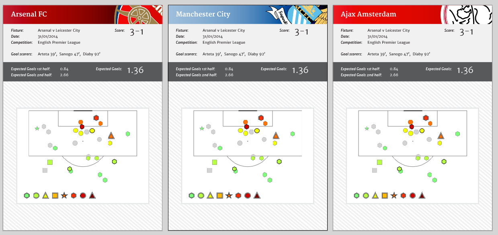
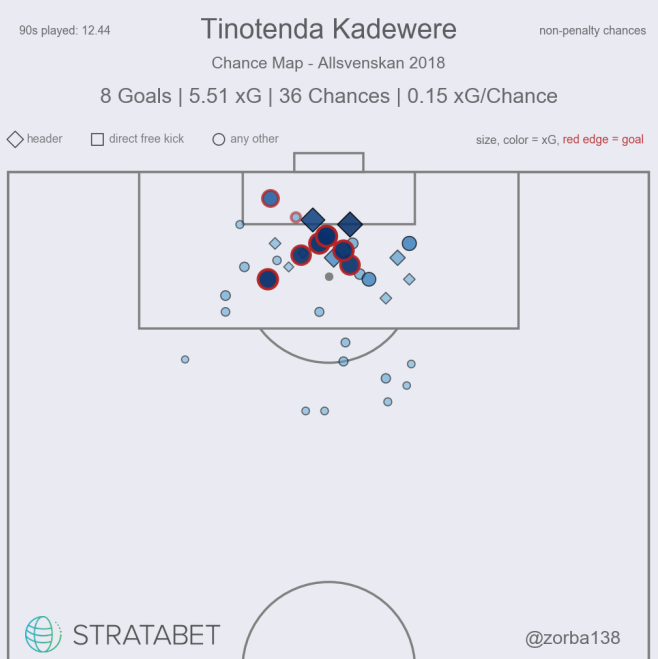
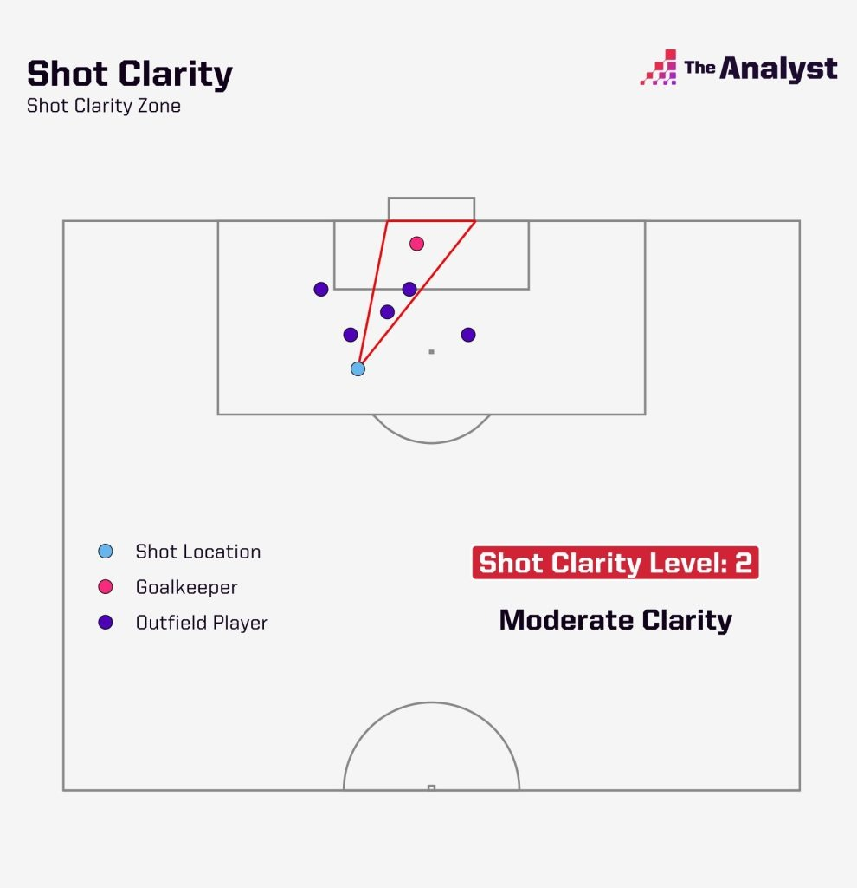
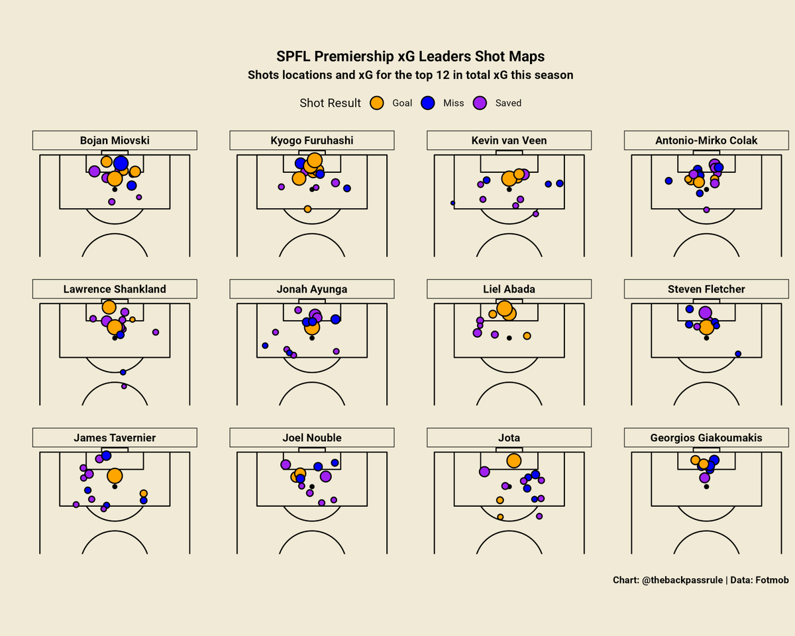
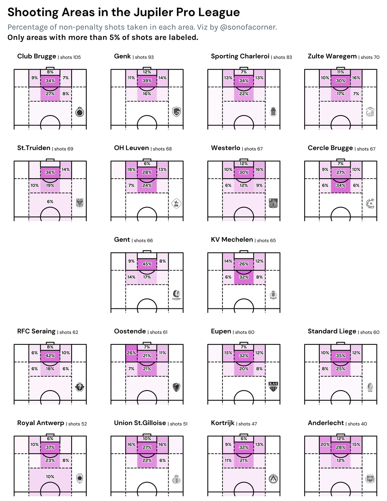
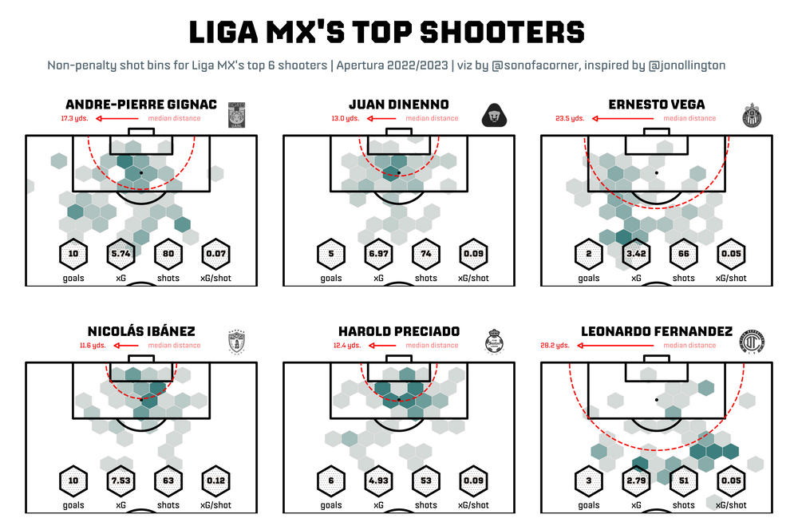
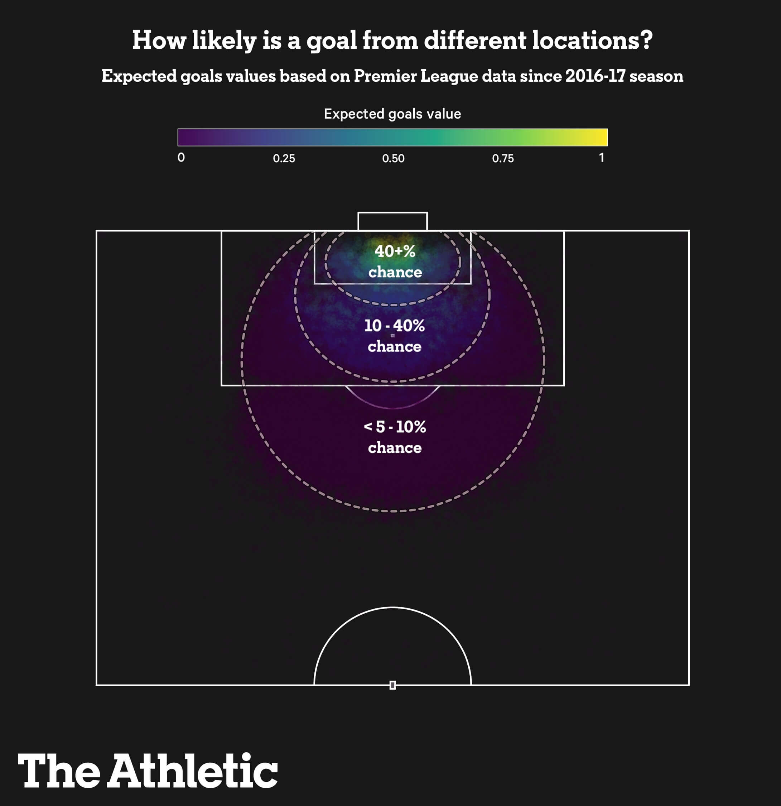

Even More Shot Maps (Python)
Hi all, I thought it had been a while since I've done a thought piece. I have been a huge fan of some of the content that has been released this year within the wider football community in terms of visuals, so wanted to do a piece on design tips and tricks I've seen that works well. It also offers me the opportunity to say that I've updated some previous code that stopped working last year. I want to say thank you to Adam Silverman for lettting me know! My code is sloppy at the best of times. Within the new code, Main.py will create 2 datasets The first is the summary stats for the season 2022/23 of the Premier League.The second is shot data for every player that played in the premier league in 2022/23. (This shot data if running the code will export every shot for that player regardless of season and league if on understat) The file i've uploaded with _ EPL is a clean version of that dataset that only looks at Premier League 2022/23
Of course, you could add a line of code in to filter back to the required season and matches, but nicer for those that don't want to amend code to have everything.

Okay so that's the code, ping me if you have any troubles.
For those that do use the dataset, make sure to cross reference it to the understat website, for example if youre doing match data you may need to flip / reflect some of the points if you want them split by team etc. But if youre just using a half pitch should be fine.
Let's dive into some inspiration that you may want to look at when using the dataset.
Where better to start than work from the Analyst?
The below image of Diogo Jota comes from the site here.

Some reasons I like this shot map.
- The pitch is lighter in colour, just a gentle grey colour, helps push the pitch framework to the background not being over powering whilst allowing the shots to take main focus.
- Context: The visual is all about how Jota took shots worth 11.5 expected goals. With seven actual goals, he underperformed his xG total by 4.5 goals. What better way than to highlight that using a red for goals. (understandably also the analyst brand logo colours)
- Rather than have a separate legend and stats values they've integrated the two. Instantly I know shots are circles, and the shots that went in are the red. We don't have to now state this twice on the page.#
Gregory (Scotland Yard detective): “Is there any other point to which you would wish to draw my attention?” Holmes: “To the curious incident of the dog in the night-time.” Gregory: “The dog did nothing in the night-time.” Holmes: “That was the curious incident.”The fact that the dog did not bark when you would expect it to do so while a horse was stolen led Homes to the conclusion that the evildoer was a not a stranger to the dog, but someone the dog recognized and thus would not cause him to bark.  This next piece is from Opta Analyst on Twitter. A 2-2 tie between Dortmund and Mainz despite having 19 more shots and an expected goals of 4. Many of the compliments from the previous three shot maps also are seen in this one. The main reason I wanted to include this is for an example of framing. Opta do well to add in details of the game where there would be otherwise 'lost space'. See where the kick off circle is, they utilise this empty space where no one is shooting from the allow for some key stats. They also divide the pitch in two using the club logos, so you know which side refers to which team, without having to explicitly write it with more ink on the page.  For this one from Statsbomb, lets ignore the shot map for the time being but look at the overall design. I particularly like the framing to this visual. The banner headers are really effective in showing team. The score and xG are larger than the remaining details of fixture, date and competition in order to allow the user to see the main impact of the game before getting some of the additional context.  And to end the shot maps this final piece by Stratabet, Zorba. I think a challenge many of us face is how much information to put on the page or not. I include this one because I think it is the most easily replicable within Tableau of all the ones above (yay!). Stratabet do well to have various layered headings. Interestingly enough this visual will take a little longer to understand (which isn't always a bad thing) and thats because of the use of pre-attentitive attributes. We have multiple things going on, with the use of size, shape and colour at the same time. It's a good reminder of thinking how these can work in unison for our story! You can read the full article here. Going Further Now there is alot of talent in the wider community but here are a few visuals that take it to the next step beyond just shot points so why not try: Shot Clarity charts (Analyst)  Small Multiples (Modern Fitba)  Shooting Area charts (Son of a Corner)  Hex shot maps Son of a Corner  Goal Locations - The Atheltic  That's it for this week. Hopefully a few nice design ideas showcased within this weeks blog. Back to tutorials in weeks to come. LOGGING OFF, CJ